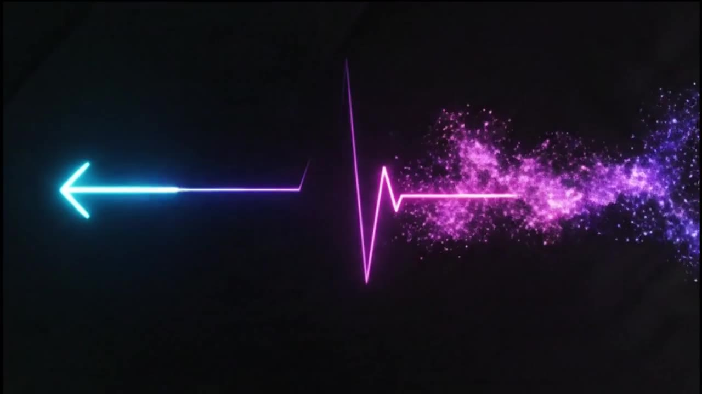

画像を受け取る
一枚の画像にある特徴や魅力を読み解く。
FROM ONE IMAGE TO A STORY
あらゆるものにストーリーを与える。
画像の魅力を言葉にし、世界観を組み立て、映像やLPへ。StoryMakerの制作プロセスとアウトプットを、4本の動画でたどります。

一枚の画像にある特徴や魅力を読み解く。
アングル、世界観、シナリオの方向をつくる。
キービジュアルと映像へ、イメージを広げる。
動画やランディングページとして仕上げる。
01 / FULL DEMO
分析から企画、ビジュアル生成へ。StoryMakerの全体像を約1分で見渡す制作デモ。
動画を直接開く ↗02 / CANVAS WORKFLOW
Canvasを使った操作デモ。入力した素材が、言葉や構成へ展開していく過程を紹介します。
動画を直接開く ↗